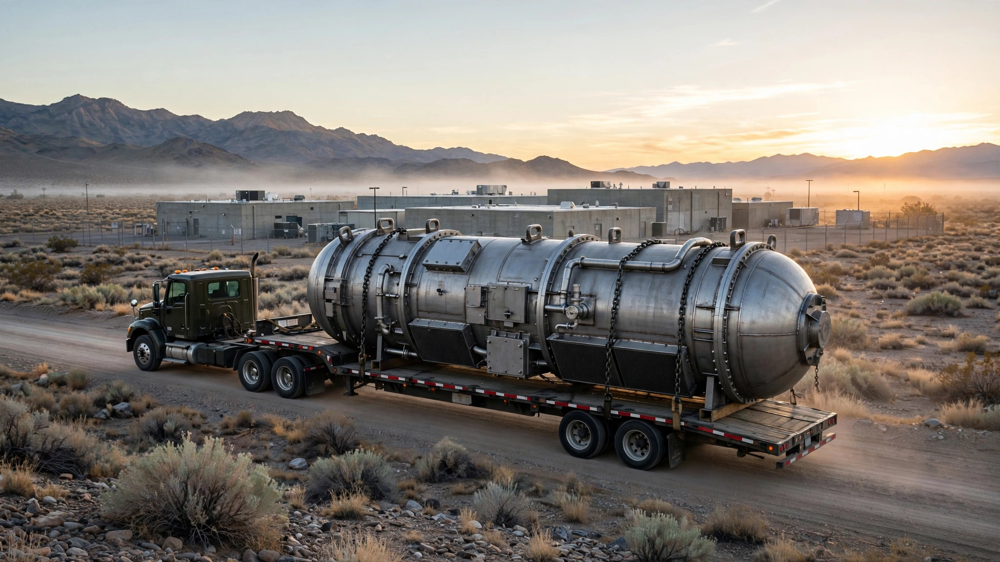

⚡ Energy
150 Days From Kickoff to Nuclear Chain Reaction. We Calculated What Happens When Reactors Become Products Instead of Monuments.
Four US startups achieved nuclear criticality under a presidential deadline. The fastest did it in 150 days. But our production-rate analysis shows the real constraint isn't building one reactor fast. It's building hundreds fast enough to outrun AI's power appetite.

One hundred and fifty days. That is how long it took Deployable Energy to go from project kickoff to a self-sustaining nuclear chain reaction at Idaho National Laboratory, according to Reuters. In roughly the time it takes to remodel a kitchen, this company built a reactor, delivered fuel, and achieved zero-power criticality. For context, Vogtle Units 3 and 4 in Georgia, America's last nuclear plant, took 3,775 days from first concrete to commercial operation on Unit 3 alone, cost $35 billion, and arrived seven years behind schedule.
Deployable was not alone. Between June 4 and July 4, 2026, four different startups achieved nuclear criticality under the Department of Energy's Reactor Pilot Program, exceeding a Trump administration executive order that set a deadline of three reactors by America's 250th birthday. Each company used a different reactor design, a different fuel type, and a different cooling system. Three of the four companies were founded in 2023. One, Deployable, started in 2025.
We ran the numbers on what this acceleration actually means for the energy gap that AI is ripping open, and the answer is more complicated than the startups or their critics suggest.
Four Reactors, Four Architectures, One Deadline
| Company | Reactor | Criticality | Fuel | Coolant | Time to Criticality | Power Target |
|---|---|---|---|---|---|---|
| Antares Nuclear | Mark-0 | June 4 | HALEU / TRISO | Sodium heat-pipe | 9 months | Electricity 2027 |
| Valar Atomics | Ward 250 | June 18 | TRISO / HTGR | Helium | ~10 months | Power ascension begun |
| Deployable Energy | Unity | June 30 | 4.95% LEU UO₂ | Helium (water-mod.) | ~150 days | 1 MWe battery |
| Aalo Atomics | Aalo-X CTR | July 4 | 5% LEU UO₂ | Sodium (graphite-mod.) | 8 months | 10 MWe → 50 MWe Pod |
The diversity matters. POWER Magazine reports that Antares uses high-assay low-enriched uranium in TRISO pebbles with sodium heat pipes, targeting military bases under the Army's Janus Program. Valar became the first to achieve criticality outside a national laboratory, operating its helium-cooled HTGR at the Utah San Rafael Energy Lab. Deployable used commercially available materials and conventional 4.95% enriched uranium, deliberately avoiding the exotic fuel supply chains that have bottlenecked other advanced reactor projects. And Aalo built a sodium-cooled, graphite-moderated reactor with a hexagonal fuel lattice inspired by the 1960s-era Hallam Nuclear Power Facility, then assembled 540 fuel rods in two and a half days.
If this were a tech startup demo, the variety would be unremarkable. But this is nuclear. America has commercially operated exactly two reactor designs for the past half century, pressurized water and boiling water, and four competing architectures reaching criticality in 30 days with four different fuel types, four different coolant systems, at three different sites across two states is something that has simply never happened before in civilian nuclear history.
The Vogtle Comparison, Done Honestly
Comparing microreactor criticality to Vogtle's timeline requires care, because the two milestones are not equivalent. Zero-power criticality proves a reactor can sustain a fission chain reaction. It does not mean generating electricity. Commercial operation means reliably selling power to the grid. Kathryn Huff, former DOE assistant secretary for nuclear energy and chair of nuclear engineering at the University of Wisconsin-Madison, put it bluntly on the Catalyst podcast: "A zero-power-criticality test can be achieved without making real engineering progress on fuel or design."
Still, the timeline compression is real even when you adjust for scope. We calculated three ratios, each revealing a different facet of the acceleration.
| Metric | Vogtle Unit 3 | Aalo Atomics (projected) | Ratio |
|---|---|---|---|
| Founding → criticality | ~44 years (Southern Nuclear, 1980) | ~3 years (founded 2023) | 15× |
| Ground-breaking → criticality | ~3,775 days (Mar 2013 → Jul 2023 first criticality) | ~240 days (Jan → Jul 2026) | 16× |
| Construction → commercial power (projected) | ~126 months | ~18-24 months (2027 target) | 5-7× |
That last row matters most. Aalo's CEO Matt Loszak told POWER Magazine that excavation for the company's second reactor was complete the week before the criticality milestone, with first concrete imminent. Loszak targets commercial-scale electricity in 2027. If that holds, the construction-to-power cycle would compress from Vogtle's decade to roughly two years, with a reactor producing 10 MWe instead of Vogtle's 1,117 MWe per unit.
Size is everything here.
The Production Rate Gap Nobody Is Talking About
Here is the calculation that changes the picture. Nobody doubts startups can build a reactor fast. They just proved it. But enough reactors? Fast enough? That is a different problem entirely, and the numbers are sobering when you stack them against how fast AI data center demand is growing.
OpenAI signed a 25-year deal last week for 3,200 MW of power in Georgia for a single data center campus. Microsoft, Google, Amazon, and Meta are each planning 5-15 GW of additional capacity. Conservative estimates put total US hyperscaler demand growth at 20-30 GW by 2030.
We ran Aalo's own numbers against that demand. Aalo's commercial design packages five 10 MWe reactors into a single 50 MWe "Pod" connected to a shared turbine. At 50 MWe per Pod:
| Demand Scenario | Pods Needed | Individual Reactors |
|---|---|---|
| One hyperscale data center (200 MW) | 4 | 20 |
| OpenAI Georgia campus (3,200 MW) | 64 | 320 |
| US hyperscaler growth by 2030 (20 GW, low est.) | 400 | 2,000 |
| US hyperscaler growth by 2030 (30 GW, high est.) | 600 | 3,000 |
Aalo built its first reactor in a 40,000-square-foot Austin factory and is expanding to one million square feet. Assume the expanded factory can produce reactors in parallel. At Aalo's demonstrated pace of one reactor core in roughly 28 days of fabrication, a million-square-foot facility running 10 build lines simultaneously could produce approximately 120 reactors per year. That is 1.2 GWe of annual capacity. Sounds impressive. It isn't.
To supply 20 GW of new demand by 2030, you would need approximately 17 factories operating at that rate for four years, each one larger than three Walmart Supercenters placed end to end, each staffed with trained nuclear fabrication crews that do not currently exist in anything close to sufficient numbers. Matching just the OpenAI Georgia deal alone would require 320 reactors, taking a single factory about 2.7 years.
So the bottleneck has moved. It is no longer the physics of sustaining a chain reaction or the regulatory gauntlet of NRC licensing. Manufacturing throughput is what decides whether microreactors produce enough power to matter, at a rate that can keep pace with electricity demand growing faster than at any point since postwar rural electrification.
What the Startups Got Right
DOE's Reactor Pilot Program functioned as industrial policy with teeth. Executive Order 14301 gave 10 selected companies access to national lab land, fuel supply chains, expert safety reviewers, and crucially, authorization to build under DOE oversight rather than the full NRC licensing process. Companies responded by treating the July 4 deadline the way a startup treats a launch date rather than the way a utility treats a regulatory submission.
Aalo's Yasir Arafat, president and CTO, described the approach in a February blog post: "We chose to accept the impossible timeline so that we could reinvent how a reactor project is executed." The company hired former Navy submarine reactor operators and trained them on its specific reactor design for months before fuel arrived. It built the reactor building in 36 days and fabricated core components at its own factory rather than waiting for legacy nuclear supply chain vendors.
Deployable Energy went further, using only commercially available materials and a conventional enrichment level of 4.95%, sidestepping the HALEU fuel supply constraints that have delayed projects like Oklo's. CEO Bobby Gallagher told Reuters: "We've proven the supply chain, the team, and the regulatory pathway, and now we begin proving the product." Smart. Exotic fuels have killed more reactor projects than bad physics.
Microsoft's partnership numbers are equally telling. Microsoft reported that its generative AI permitting tools reduced Aalo's permitting process time by 92%, with estimated savings of $80 million per year. If that number scales across the industry, the argument that nuclear is inherently slow starts to unravel: a large fraction of the delay in nuclear construction has been paperwork, not physics.
The Strongest Case Against
Third Way, a center-left public policy think tank, published an analysis calling the microreactor milestone an "unhelpful diversion" from the goal of meaningfully increasing US nuclear capacity. At first glance, the math supports their concern. Vogtle's two new units added 2,234 MWe to the grid. Matching that with Aalo's 50 MWe Pods would require 45 Pods containing 225 individual reactors. Attention and DOE resources flowing to microreactors could arguably deliver more capacity if directed at large-scale reactor designs with higher per-unit output.
Their memo also flags a structural worry: "Artificially accelerating project timelines is a short-term solution, not a long-term fix." Speed came partly from DOE authorization that bypassed NRC commercial licensing. Every one of these companies will eventually need NRC approval to sell power commercially, and nobody yet knows how fast that process will move for designs the agency has never reviewed. NRC proposed a new microreactor framework earlier this year, but it remains unfinalized.
And then there is the question nobody wants to ask. What if one of these fast-tracked reactors has a problem? Nuclear safety's track record rests on decades of conservative engineering practice. Speed and caution have historically been adversaries in this field, and a single incident at a microreactor could set the entire sector back a decade, regardless of whether the engineering was sound.
What We Don't Know
Our production-rate analysis relies on Aalo's stated timelines and factory plans, which have not been independently validated. No microreactor company has disclosed commercial pricing per MWe. NRC timelines for reviewing and licensing these novel designs remain uncertain. Fuel supply constraints, particularly for HALEU-dependent designs like Antares, are real but hard to quantify without non-public procurement data. And Deployable's 150-day figure includes the advantage of using an existing INL facility rather than building greenfield infrastructure.
Operating costs are a blind spot. Vogtle's levelized cost of electricity includes decades of operating data and known maintenance profiles. Microreactors have zero commercial operating history. Theoretical advantages of factory fabrication and modular replacement may or may not survive contact with NRC maintenance and inspection requirements.
The Bottom Line
Four nuclear startups just compressed reactor construction from a decade to months. They proved the physics works, the regulatory pathway is viable, and startup-speed execution is possible even in the most regulated industry on Earth.
Not trivial. America has not built a new type of nuclear reactor in 40 years, and these companies did it four times in 30 days with four different designs.
But AI's electricity crunch is growing at 20-30 GW, and these reactors produce 1-50 MW each. Our throughput calculation shows that even aggressive factory scaling would take years to reach GW-scale output. In a way, these startups solved the wrong bottleneck. Or more precisely, they solved the first bottleneck and exposed the next one: manufacturing at industrial scale.
If you work in energy procurement, data center planning, or nuclear supply chain: microreactors are real, the regulatory pathway works, and construction timelines can compress dramatically. Act on this by tracking whether factory-produced reactors can achieve the production rates needed before natural gas plants fill the gap permanently. Watch Aalo's one-million-square-foot factory expansion and Deployable's commercial deployment timeline through 2028. Those two signals will tell you whether this is a revolution in energy production or a very impressive science project.